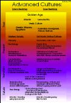

Rene K. Mueller
As already short discussed in the text relating Beam- and Spaceships about internal and external created vehicles, I thought to write about some more general aspects of this expression of ability or different advancedments:
Technology is about to develop an external realization of an inner realization and since humankind on Earth seems to have only one technological path it looks like for many parts of society impossible to develop the inner realization of the qualities, which are already developed using technology as the list above suggests.
If we are looking over a simplified history of the past (10'000- 20'000 years) according to its technological advancedment splitting from inner -realization- cultures, it's very obvious we are reaching a transition were the materialistic and technological approach of reality has to re-balance itself with inner realization again:

As Atlantis represents the technical advanced culture in the past, and Lemuria & Mu and other islands as more inner realized cultures. In this way the developing of the western society was and is mainly a repetition or remapping of the same patterns into this current reality, and in a way the 3rd world and other denied and colonialized cultures had more or less to adapt a piece of the technology with a high price of loss of their own identity of their ancient roots and knowledge. Additionally a high dependancy has been developed again, as in the past, but today with the most powerful 3d energy: money - in other terms the depts and credit politics of the western culture toward those countries. As the industrialization created the lack of connection to nature and inner self, the same developing of technique created now a deep loss of identity and crisis world-wide: from political, economic and ecological aspects.
Political and social-cultural patterns will be expanded into a society build by self-awareness and realized beings who are open to choose to develop the technological features of multi-dimensional reality, or as the ancient wisdom of the golden age represent, a full inner realization of reality:
This transition has to do with lot of releasement of so called technological- or sociological safty beliefs, science facts and other hard belief-concepts which were build using only mind to perceive and understand reality. The mystical side of every being will reappear to conscious mind and will be common knowledge and realized.
As Earth itself offered a reality and we accepted as a chance and opportunity to enrich ourselves by participating here as human beings.
The fight in the past of inner realization vs. technology is primary an expression of a decision of every being. It's not a fight but just a way to choose to experience and finally to realize creation.
Source: http://www.spiritweb.org/Spirit/realization-vs-technology.html